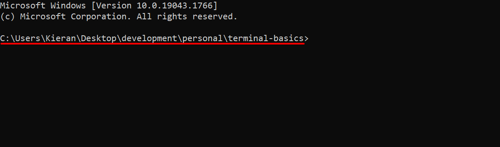
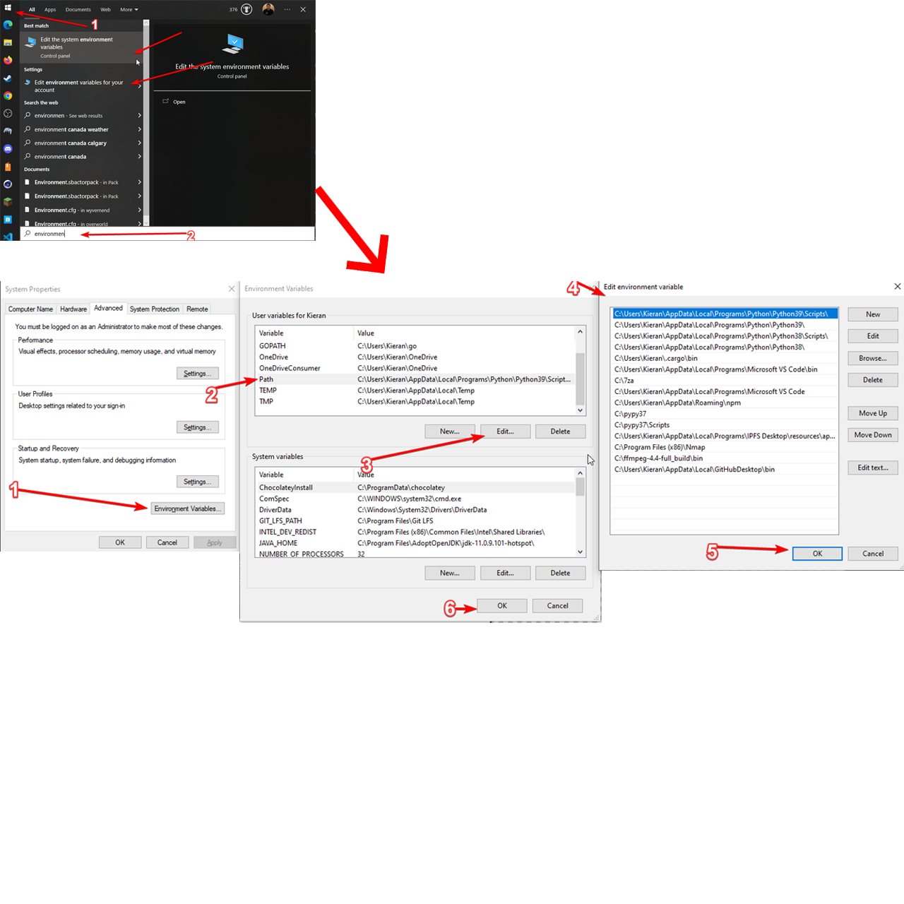
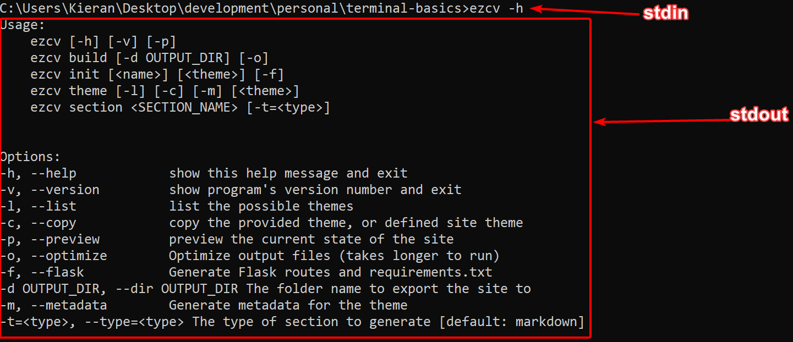

Terminal Basics
Everything you need to get started with a terminal
What do terminals do?
Terminal's allow you to run binaries (compiled programs, sometimes called apps or programs) and scripts (sometimes called commands)
Example
Let's say you're on windows and you compilled a program called hello-world.exe, you can run this if you are in the same file-folder using:
hello-world.exeyou do not need the extension for binary files on windows, so you can also use
hello-worldAvailable terminals
- For windows you can hit the windows key/search and use either cmd (batch), terminal (win 10+) or powershell (examples I use for windows are in batch and might not work on powershell)
- Macos you can use spotlight to find terminal
- linux depends on your distro, typically it's called terminal/term/xterm
*nix
I use *nix to mean any unix based system such as macos or linux
File paths
Used to locate files/folders. In order to run anything your terminal must know where the binary or script is. For example if you had a file called 'hello-world.exe' on the desktop you might use the filepath
/Desktop/hello-world.exeDirectory/dir/File folders
These are folders used to house files. They are typically denoted with either a \ or a / at the start or end. For example the desktop folder/directory would be /desktop or desktop/
Binaries/files
A file is just some data that is stored. A binary is something that is executable (can be run) like a program (when pathing to them the extension is usually optional). Binary files means a non-plain-text file that needs an application to view it properly (i.e. an image file).
Extensions
These denote the file 'type', it gives the OS an idea of what sort of content is inside the file. Please note this does not ENFORCE behaviour, just suggests it. So someone can open a file with an incompatible extension whenever they want. For example if you have a file called help.txt that would be a txt or text file with a filename of help. Some extensions have multiple dots such as tarballs which have the .tar.gz extension
Dotfiles
These are special file types that are JUST an extension. They are typically used for configuration and on windows can only be created by certain applications. An example would be a .gitignore file, which is a config file for git and the file is just .gitignore
OS Differences
Please keep in mind different operating systems use different standards, for example windows uses \ path seperators and *nix uses /. Likewise most systems folders are capitalized in windows (i.e. Downloads) and lowercase in *nix (i.e. downloads). There will be other differences I will try to point out as we go
Types of file paths
There are two types of file paths
- Relative
- Absolute
Relative file paths
By default terminals will have a current working directory (cwd), this is what will be used as a starting point of reference to locate what you need from
Relative file path tricks
Here are some tricks for working with relative file paths (# is a comment)
. # Means cwd/current folder
.. # Means to go up one folder. (i.e. if cwd is /kieran/Desktop and you use .. it would be /kieran)
filename.extension # Because it's relative to the cwd you can just type files in the same folder as cwd
./filename.extension # Equivalent to the line above
folder # Because it's relative to the cwd you can just type the folder/dir if it's in the same folder as cwd
/folder # Equivalent to above, it's good practice to include a leading slash so others know it's a folder you're looking for
./folder # Equivalent to above
Wildcards
Wildcards (not always supported) allow you to say anything and everything (denoted with *), for example /Desktop/* means ANYTHING on the desktop or /content/*.md means all files that end in .md inside the /content directory. Or Desktop/development/* would be all files and folders inside /Desktop/development
Absolute file paths
These are file paths that DO NOT care about your cwd. They fully express EXACTLY where something is for example:
C:\Users\Kieran\Desktop\hello-world.exeWhen using these you never have to worry about your CWD
When to use relative vs absolute
Use absolute when the path will never change (i.e. an installed application binary location)
Relative paths are better if your location may move. For example if you have a portable app that has a script then a relative path means you don't have to update the path every time you move it somewhere new
Cons of Absolute paths
Very long and hard to read, cannot dynamically update so if ANYTHING changes it breaks
Cons of relative paths
Can often trick you into a sense of safety where you forget which paths are being used and break something
There is a way to make absolute paths easier to work with
Environment variables
These are the state of the operating system you are running in. They can denote basically any form of state (you can also create env variables as a way of setting a sytem-wide config variable for an app)
Environment variables for paths
There is a built in env variable to find the home directory (directory where user content is stored)
Linux (~ and $HOME are equivalent)
$HOME
~Windows
%USERPROFILE%Example: finding downloads folder
Linux
$HOME/downloads
~/downloadswindows
%USERPROFILE%\DownloadsPATH Variables
If you go into your terminal and type
echo "Hello World!"You will notice that works, but you don't have a file called echo.exe (or just echo on macos/linux)
PATH Variable purpose
This is where a special environment variable comes in called your PATH variable. This essentially sets a list of default files/folders that can be called from anywhere. This works differently across OS's so I'll explain it seperately
How PATH works on windows
Windows has a %PATH% variable which is a list of folders, when you type a command it checks if it's an absolute path, then if it's a valid relative path, then it will itterate over every folder in %PATH% and try to find what you're looking for as a relative path
Windows PATH example
Let's say you type
hello-worldLet's say it's not in your CWD and instead is inside %USERPROFILE%/Desktop/hello-world.exe and you have two folders in your %PATH%: %USERPROFILE and %USERPROFILE%/Desktop.
Your terminal will first look at ./hello-world.exe, then at %USERPROFILE%/hello-world.exe then check %USERPROFILE%/Desktop/hello-world.exe at which point it would find it and run it
Reading & updating PATH variable (windows)
You can read your PATH variable by going to a terminal and typing
echo %PATH%Editing is more complicated, go through the windows GUI as it requires a registry edit that is very volatile at the command line (next slide)
Editing path on windows
How PATH works on *nix (assuming bash)
PATH on *nix has 2 parts, aliases and exported folders. Aliases let you set names as shortcut for binaries (i.e. 'chrome' could be an alias for the chrome browser) or folder exports which work the same ways as windows paths where all binaries inside the folders are accessible.
Where PATH is stored on *nix (assuming bash)
On Linux there will typically be a file at ~/.bashrc where you can make changes, on macos it is typically under ~/.bash_profile
Example .bashrc fileUpdating PATH variable (*nix); Adding 'python' binary to PATH
Lets say you have a binary called python3 located at ~/python3 and you want to be able to call it by running python
Linux; Add this line to ~/.bashrc
alias python='~/python3'MacOS; Add this line to ~/.bash_profile
alias python='~/python3'Updating PATH variable (*nix); Adding ~/programs directory to PATH
Lets say you have a folder called programs with many binaries located at ~/programs and you want to be able to call the binaries inside it
Linux; Add this line to ~/.bashrc
export PATH="$PATH:~/programs"MacOS; Add this line to ~/.bash_profile
export PATH="$PATH:~/programs"Common commands & Concepts
Now lets get into some built in commands and use cases for the terminal!
Getting help
If you're not sure how to use a command you can (usually) use
linux
command -h
command --helpwindows
help commandArguments/flags
Commands will have arguments or flags as they're often called that change how a program operates they are typically in the format
command -f
command --flag
command \FThe first two are the most common, the last form is mostly used in (really) old windows commands. You can also pass arguments (variables or data) with the following syntax
command -f "some text"
command --flag="Some Text"stdin vs stdout vs stderr
There are 3 'streams' of data that the terminal works with
stdin (standard in): The INput stream that the terminal and commands use
stdout (standard out): The OUTput stream that is what you as a user often read when a command is finished
stderr (standard error): The ERRor stream that looks like stdout to the user, but is specifically for error messages
Piping
You can PIPE the output (stdout) of one command (command1), or some text to the input (stdin) of another command (command2)
command1 | command2This means command2 will run using the output of command1 as input
Redirecting
You can redirect the output (stdout) of one command (command1), or some text to an output file (test.txt)
command1 > test.txt
command >> test.txtthe single angle bracket means create or replace the file contents with the content being redirected, two angle brackets means create or append the file contents with the content being redirected
Chaining
You can chain together commands to make them run one after another using && (except in powershell)
command1 && command2 && command3Regex
I am not going to cover regex because it could be it's own presentation. But it's essentially a way of writing rules for finding patterns (i.e. Taking in some text and checking if it's a valid email or a valid phone number)
More info about regex Tool to write regexecho
used to print something, for example printing an environment variable
Linux
echo $HOMEwindows
echo %USERPROFILE%cd
Used to change directoy (update your CWD), for example moving into a folder in cwd called /content
cd contentThose tricks from earlier are all applicable here, so if you want to change your CWD to the directory your current CWD is in you can use
cd ..mv/move
Used to move files/folders (for example move a folder called /content to your downloads)
linux
mv content ~/downloads/contentWindows
move content %USERPROFILE%\Downloads\contentmkdir
Used to create new folders (same command on *nix and windows)
mkdir foldertouch/echo ' '
Used to create a new blank file (in this example test.txt)
linux
touch test.txtWindows
echo "" > test.txtcp
Used to copy a file/folder to another path on linux (for example copying contents to downloads folder)
Linux (copy a file)
cp test.txt ~/downloads/test.txtLinux (copy a folder)
cp -r /folder ~/downloads/folderLinux (copy a folder AND it's contents)
cp -r /folder/* ~/downloads/foldercopy/xcopy
Used to copy a file/folder to another path on windows (for example copying contents to downloads folder)
Windows (file)
copy test.txt %USERPROFILE%\DownloadsWindows (folder AND it's contents)
xcopy /E /I folder %USERPROFILE%\Downloads\folderrm/del
Used to delete files/folders
Linux (deleting a file)
rm test.txtLinux (deleting a folder)
rm -rf /folderWindows (del works on files or folders)
del test.txtcat/type
Used to read the contents of a file
Linux
cat test.txtWindows
type test.txtls/dir
Used to list the contents of a folder (can pass a file path but defaults to CWD)
linux
ls
ls /folderwindows
dir
dir /folderwhich/where
Used to find the filepath to the binary being run when you type in a command
linux
which commandwindows
where commandzip/(tar or Compress-Archive)
Create a zip/archive file that contains other files/folders (for example putting /folder into a zip/archive file)
linux
zip -r folder.zip folderwindows (powershell)
Compress-archive folder folder.zipwindows (CMD)
tar -cvzf folder.tar foldergrep/findstr
Allows you to find all instances of a string or regex pattern. Typically this is used in conjunction with a pipe for input (for example I can search for lines with 'ezprez' in this presentations source file)
linux
cat example.py | grep ezprezwindows
type example.py | findstr ezprezKeep in mind this can only be used on text and text-like files, not binaries or binary files. Also you can use this in a loop to search all files in a directory to see which one's contain a certain string or pattern.